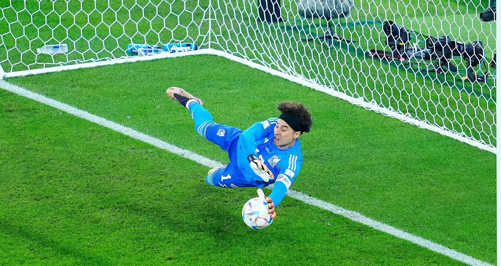
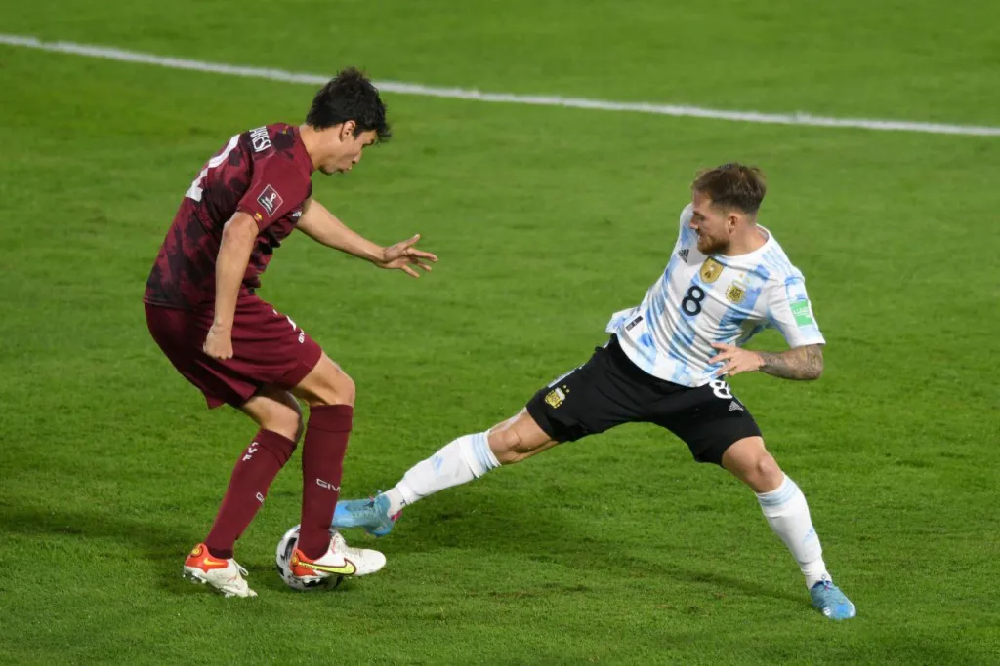
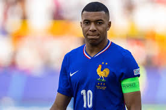

| Apariencia | El portero suele llevar un uniforme distinto al del resto del equipo, con colores brillantes y guantes especiales. Es el único jugador autorizado a usar las manos dentro del área. |  |
|---|---|---|
| Función | Evitar que el balón entre a la portería. Es la última línea de defensa y tiene una visión estratégica del campo. | |
| Habilidades | Reflejos, estiradas, anticipación, liderazgo defensivo y buen juego con los pies. | |
| Ventajas | Capacidad para salvar goles y mantener al equipo en juego. Pueden convertirse en héroes en penales. | |
| Debilidades | Un solo error puede costar un gol. Están más expuestos a críticas y necesitan gran fortaleza mental. |
| Apariencia | Generalmente fuertes y altos, con buena presencia física. Visten el uniforme del equipo, pero destacan por su fortaleza y determinación en los duelos. |  |
|---|---|---|
| Función | Evitar ataques del rival, cortar balones y despejar el peligro. Organizan la línea defensiva. | |
| Habilidades | Marcaje, juego aéreo, anticipación, fuerza física, y salida con balón controlado. | |
| Ventajas | Clave para mantener el orden defensivo. Su capacidad para leer el juego ayuda a prevenir goles. | |
| Debilidades | Si fallan en su marcaje, el equipo queda muy expuesto. Poca velocidad puede ser explotada por delanteros rápidos. |
| Apariencia | Jugadores de buena condición física, con visión de juego. Llevan el mismo uniforme que el resto del equipo y suelen ocupar el centro del campo. | |
|---|---|---|
| Función | Conectar defensa y ataque, recuperar balones, distribuir el juego, y controlar el ritmo del partido. | |
| Habilidades | Visión, pases precisos, resistencia, control del balón, inteligencia táctica. | |
| Ventajas | El corazón del equipo. Su rendimiento puede marcar la diferencia en el dominio del juego. | |
| Debilidades | Al estar en constante movimiento, pueden agotarse rápidamente o perder el control si el rival domina el mediocampo. |
| Apariencia | Jugadores ágiles y con actitud ofensiva. Se les reconoce por su olfato goleador y celebraciones. |  |
|---|---|---|
| Función | Marcar goles y presionar a la defensa rival. Encabezan los ataques y buscan constantemente oportunidades de gol. | |
| Habilidades | Definición, velocidad, regate, desmarque, precisión en el disparo. | |
| Ventajas | Capaces de decidir partidos. Una buena jugada puede cambiar el rumbo del juego. | |
| Debilidades | Si no reciben buen servicio del medio campo, pueden quedar aislados. Poca efectividad frente al arco puede ser muy costosa. |